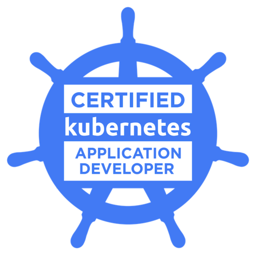
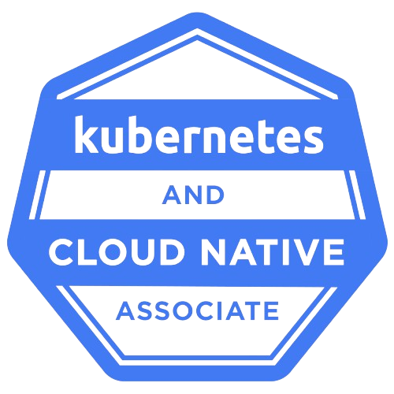
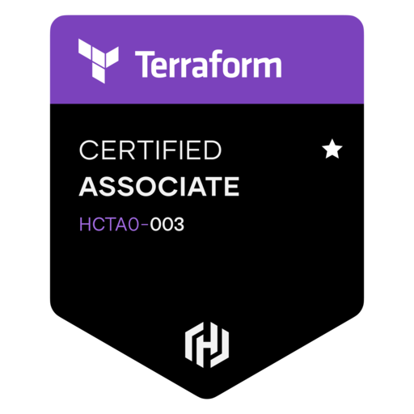

Hello, I'm
Shaun Mane
From managing construction projects to building cloud infrastructure, I bring a problem-solving mindset to every challenge. I build secure, reliable, and scalable cloud infrastructure using AWS, Terraform, Kubernetes, and cloud-native technologies.
Who I am
About
I’m a Cloud Engineer with a background in Construction Management, where I developed a strong foundation in planning, problem-solving, risk management, and delivering complex projects. Those same skills now drive my work in designing and automating reliable cloud infrastructure.
After transitioning into tech, I’ve focused on AWS, Terraform, Linux, Kubernetes, and DevOps practices, building production-inspired projects that demonstrate Infrastructure as Code, CI/CD pipelines, containerised applications, and scalable cloud architectures.
I enjoy turning complex problems into simple, automated solutions and continuously expanding my knowledge through hands-on learning, certifications, and real-world projects. My long-term goal is to become not only a competent, but also a reliable and dependable engineer helping organizations build secure, scalable, and resilient cloud platforms.
When I’m not building in the cloud, you’ll find me capturing moments behind the lens — click the image on the right to see some of my work.
Projects
Infrastructure & Cloud
A selection of projects showcasing my skills in cloud infrastructure, DevOps, automation, and modern software deployment.
Cloud Resume Challenge
This project is my implementation of the Cloud Resume Challenge using Terraform for Infrastructure as Code (IaC).
The challenge demonstrates practical cloud engineering and DevOps skills by building and deploying a serverless resume website on AWS with automation, CI/CD, and monitoring.
View GitHub >AWS DevOps Blue/Green Pipeline Workshop (Terraform IaC)
A Terraform-built CI/CD pipeline that builds a Docker image, pushes it to ECR, and deploys it to ECS using CodePipeline, CodeBuild, and CodeDeploy with Blue/Green traffic shifting.
View GitHub >Distributed App
A project demonstrating the architecture and implementation of a distributed application.
This repo includes examples of microservices, inter-service communication, load balancing, and fault tolerance, providing hands-on experience with distributed systems concepts. Ideal for exploring scalability, resilience, and deployment strategies in cloud-native environments.
View GitHub >Cloud Resume API
A serverless API (that serves resume data in JSON format) using AWS Lambda and DynamoDB, integrated with GitHub Actions.
View GitHub >Terraform Beginner Bootcamp
A hands-on repository for learning HashiCorp Terraform fundamentals.
This project includes beginner-friendly exercises, examples, and configuration files covering core Terraform concepts like providers, resources, variables, outputs, and state management.
View GitHub >Technology
Skills
A practical toolset shaped by hands-on cloud, and delivery projects.
Cloud & Infrastructure
Containers & Orchestration
CI/CD & Automation
Infrastructure as Code
Platform & Delivery
Monitoring & Observability
Systems & Scripting
Credentials
Certifications
Industry-recognized certifications demonstrating cloud and infrastructure expertise.

CKAD: Certified Kubernetes Application Developer
The Linux Foundation
Verify on Credly →
KCNA: Kubernetes and Cloud Native Associate
The Linux Foundation
Verify on Credly →
GitHub Actions
Microsoft
Verify on Microsoft →
Terraform Associate
HashiCorp
Verify on Credly →
AWS Certified Developer: Associate
Amazon Web Services
Verify on Credly →
AWS Certified Solutions Architect: Associate
Amazon Web Services
Verify on Credly →
AWS Cloud Practitioner
Amazon Web Services
Verify on Credly →